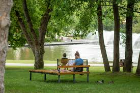
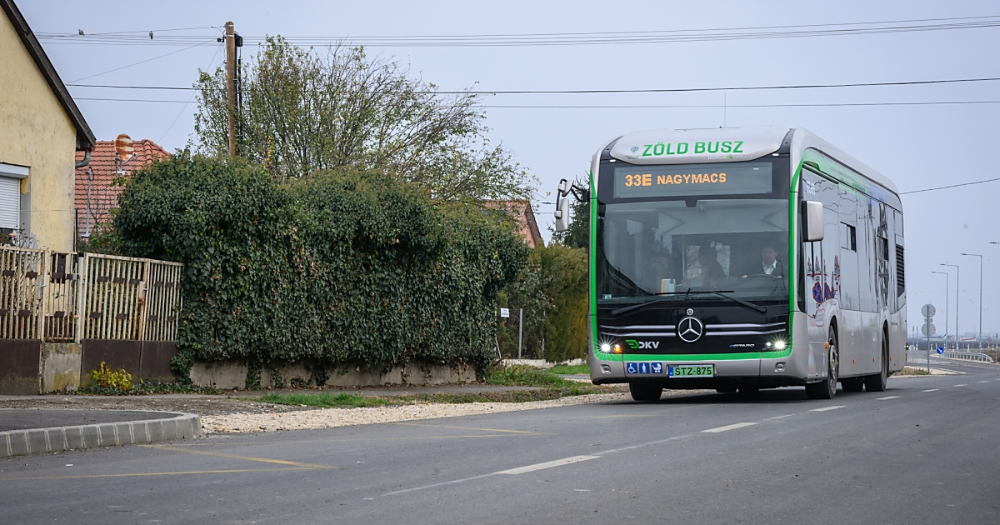

Debrecen zöld törekvései
🏛️ Helyi önkormányzati kezdeményezések
- Zöld Busz Program: Elektromos buszok beszerzése a városi közlekedés zöldítésére, csendesebb és tisztább utazás.
- Szelektív hulladékgyűjtés fejlesztése: Új gyűjtőpontok, hulladékudvarok és lakossági tájékoztató kampányok a fenntartható hulladékkezelésért.
- Zöld energia közintézményekben: Napelemek felszerelése iskolákra, óvodákra, ezzel csökkentve az energiafogyasztást.
- Méhbarát város program: Vadvirágos területek létesítése a beporzók védelméért és a városi ökoszisztéma erősítéséért.
🚲 Zöld közlekedés és bicikliutak
- Új és felújított bicikliutak, különösen a Nagyerdő környékén és a belvárosban.
- Közösségi kerékpáros rendszer elindítása (pl. DebrecenBike).
- Elektromos járművek támogatása, új töltőpontok telepítése a város több pontján.

🌳 Természetvédelem – Nagyerdő és Natura 2000
- Nagyerdő: A város ikonikus zöldterülete, kiemelt természetvédelmi jelentőséggel.
- Natura 2000 területek: Olyan élőhelyek, amelyek védelme az EU szintjén is prioritás. Debrecen környékén több ilyen terület is található.
- Folyamatos védelem, beépítések tiltása és élőhelymegőrzés a cél.
🏗️ Fenntartható várostervezés
- Új beruházásoknál figyelembe veszik a környezeti hatásokat és a zöld infrastruktúrát.
- A város célja, hogy kompakt, élhető, zöld közösségi terekkel rendelkező várossá váljon.

- A természetes élőhelyek beépítésének korlátozása is napirenden van.
🏫 Környezettudatos oktatás és szemléletformálás
- Ökoiskolákban és óvodákban tanítják a szelektív hulladékgyűjtést, komposztálást.
- A Debreceni Egyetem fenntarthatósági kutatásokat folytat, és részt vesz a városi zöld stratégiában.
- A Botanikus Kert és a Nagyerdő oktatási túrákat szervez gyerekeknek.
🧪 Zöld technológiák és innovációk
- A város célja, hogy "Smart Green City" legyen 2030-ra.
- Innovációk: víztisztítás, napelemek, zöld építőanyagok fejlesztése.
- Kutatás és együttműködés a Debreceni Egyetemmel fenntarthatósági területeken.